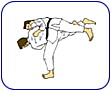

|

Welcome to the official site of the Judo language! The Judo language is the key technology hosted herein. You can find the latest software, news, the most current documentation, sample code and tutorials.
This site has been rebuilt in March, 2005. Some of the content are transplanted legacy, and we are working hard to updating the language documentation.
Latest development
The latest release includes improved support for the JuSP Platform and the JuSPT content management kit.
First-time visitors
If this is the first time you encounter Judo, here is a number of options for you:
- For the real impatient, the quickest way to get started is the example library which cover almost all the language features.
- The white paper explains scripting in the Java era and Judo philosophy, and comprehensively introduces Judo. The FAQ may answer some of your key questions.
- For Java programmers, the fully capable Java Scripting may be more interesting.
- It is better to read For New Users first for the very basics of Judo.
- For enterprise developers are likely interested in one of more of these topics: JDBC Scripting, Hibernate Scripting, WSDL Scripting, HTML/SGML/JSP Scraping, Ant Task Scripting, Java GUI Scripting.
- For any power computer users, these facilities can be very interesting: File System Scripting, OS Scripting and Internet scripting.
Getting help
You have a number of ways to get responsive help. One is to submit questions and suggestions to our feedback. The other is to use forums, mailing lists, wiki and/or weblog.
|  |
What is Judo?
Judo is a practical, functional scripting language.
It is designed to cover the use cases of not only algorithmic/object-oriented/multi-threaded programming and Java scripting but also a number of major application domain tasks, such as scripting for JDBC, WSDL, ActiveX, OS, multiple file/data formats, etc. Despite its rich functionality, the base language is extremely simple, and domain support syntax is totally intuitive to domain experts, so that even though you have never programmed in Judo, you would have little trouble figuring out what the code does. See for yourself by looking at any of the examples.
The Judo language specification can be formulated in pseudo-BNF as:
| Judo | ::= | Core-Language +
Object-System Scripting +
Data-and-Services Scripting
|
Core
Language | ::= |
JavaScript x 90% +
Genuine OOP +
Powerful data structures +
Thread programming
|
Object
Systems | ::= |
Fully capable Java scripting +
SOAP web service scripting +
Windows ActiveX/COM scripting
|
Data
and
Services | ::= |
JDBC scripting +
Hibernate ORM/HQL scripting +
XML, SGML and JSP scripting +
OS shell scripting +
Internet scripting +
Ant and Ant task scripting +
Java GUI scripting
|
What's Judo good for?
The key benefits of progamming in Judo are productivity and maintainability, thanks to its rich, built-in functionality and the unprecedented emphasis on code conciseness and intuitiveness. Judo itself is a general-purpose language, and is strong for tasks like:
- multi-source, multi-format data analysis, reporting or aggregation
- automated tasks such as unit and system testing, batch processing jobs, system monitering, etc.
- software application prototyping at different levels and tiers
- developing enterprise applications
- quick ad hoc fixes
- etc., etc.
|